移动开发领域近年来已经逐渐告别了野蛮生长的时期，进入了相对成熟的时代。而一直以来 Native 和 Web 的争论从未停止，通过开发者孜孜不倦的努力，Web 的效率和 Native 的体验也一直在寻求着平衡。本文聚焦 iOS 开发和 Web 开发的交叉点，希望能通过简要的介绍，帮助开发者一窥 Hybrid 和大前端的构想。
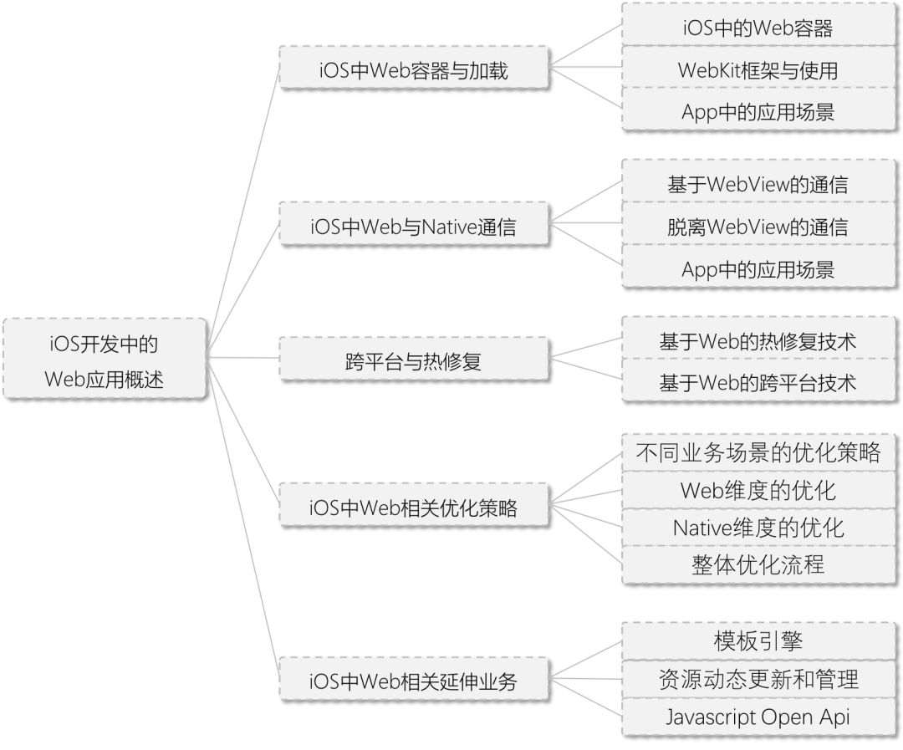
IOS中web容器与加载
1、IOS中的Web容器
目前IOS系统为开发者提供三种方式来展示Web内容
UIWebView
UIWebView 从 iOS2 开始就作为 App 内展示 Web 内容的容器，但是长久以来一直遭受开发者的诟病；系统级的内存泄露、极高内存峰值、较差的稳定性、Touch Delay 以及 Javascript 的运行性能及通信限制等等。在 iOS12 以后已经标记为 Deprecated 不再维护。
WKWebView
在 iOS 8 中，Apple 引入了新一代的 WebKit framework，同时提供了 WKWebView 用来替代传统的 UIWebView。它更加的稳定、拥有 60fps 滚动刷新率、丰富的手势、KVO、高效的 Web 和 Native 通信，默认进度条等等功能，而最重要的，是使用了和 safari 相同的 Nitro 引擎极大提升了 Javascript 的运行速度。WKWebView 独立的进程管理，也降低了内存占用及 Crash 对主 App 的影响。
SFSafariViewController
在 iOS 9 中，Apple 引入了 SFSafariViewController。其特点就是在 App 内可以打开一个高度标准化的、和 Safari 一样界面和特性的页面。同时 SFSafariViewController 支持和 Safari 共享 Cookie 和表单数据等等。
Web容器选型
对于 SFSafariViewController：由于其标准化程度之高，使之界面和交互逻辑无法和 App 统一，基于 App 的整体体验的考虑，一般都使用在相对独立的功能和模块中，最常见的就是在 App 内打开 App Store 或者广告、游戏推广的页面。
对于 UIWebView/WKWebView：如果说之前由于 NSURLProtocol 的问题，好多 App 都在继续使用 UIWebView，那么随着 App 放弃维护 UIWebView（iOS12），全部的 App 应该会陆续的切换到 WKWebView 中来。当然，最初 WKWebView 也为开发者们带来了一些难题，但是随着系统的升级与业务逻辑的适配也逐步的修复，后文会列举几个最为关注的技术点。
UIWebView/WKWebView 对主 App 内存的影响：
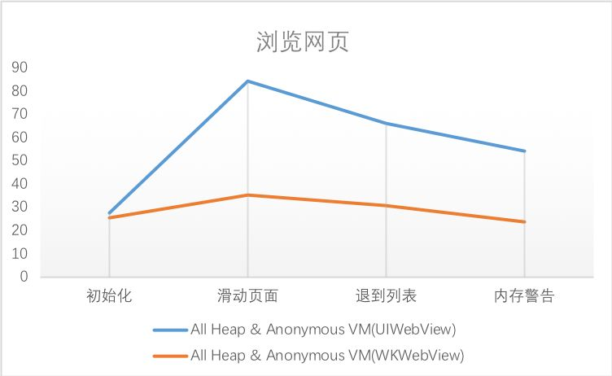
2、WebKit 框架与使用
WebKit.framework
WebKit 是一个开源的 Web 浏览器引擎。每当谈到 WebKit，开发者常常迷惑于它和 WebKit2、Safari、iOS 中的 framework、以及 Chromium 等浏览器的关系。
广义的 WebKit 其实就是指 WebCore，它主要包含了 HTML 和 CSS 的解析、布局和定位这类渲染 HTML 的功能逻辑。而狭义的 WebKit 就是在 WebCore 的基础上，不同平台封装 Javascript 引擎、网络层、GPU 相关的技术（WebGL、视频）、绘制渲染技术以及各个平台对应的接口，形成我们可以用的 WebView 或浏览器，也就是所谓的 WebKit Ports。
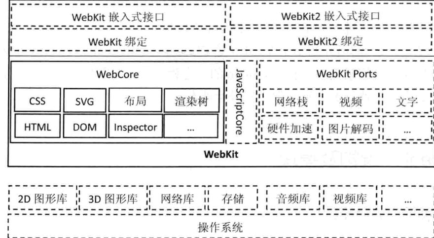
比如在 Safari 中 JS 的引擎使用 JavascriptCore，而 Chromium 中使用 V8；渲染方面 Safari 使用 CoreGraphics，而 Chromium 中使用 Skia；网络方面 Safari 使用 CFNetwork，而 Chromium 中使用 Chromium stack 等等。而 WebKit2 是相对于狭义上的 WebKit 架构而言，主要变化是在 API 层支持多进程，分离了 UI 和 Web 接口的进程，使之通过 IPC 来进行通讯。
对于 iOS 中的 WebKit.framework 就是在 WebCore、底层桥接、JSCore 引擎等核心模块的基础上，针对 iOS 平台的项目封装。它基于新的 WKWebView，提供了一系列浏览特性的设置，以及简单方便的加载回调。而具体类及使用，开发者可以查阅官方文档:
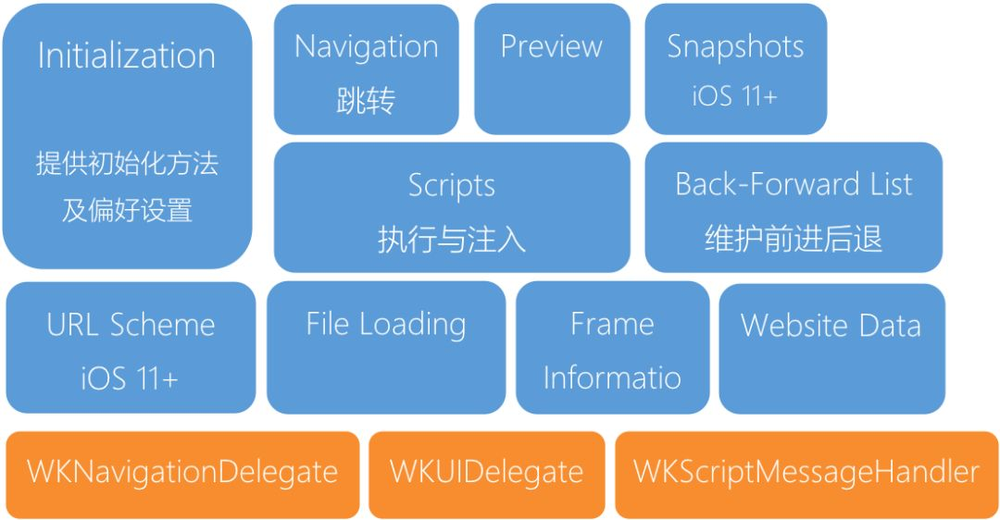
Web 容器使用流程与关键节点
对于大部分日常使用来说，开发者需要关注的就是 WKWebView 的创建、配置、加载、以及系统回调的接收。
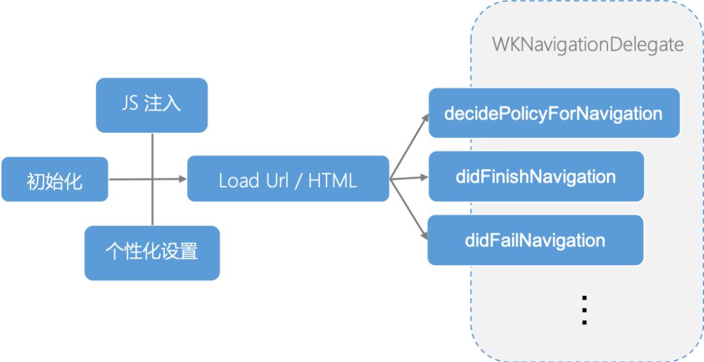
对于 Web 开发者，业务逻辑一般通过基于 Web 页面中 Dom 渲染的关键节点来处理。而对于 iOS 开发者，WKWebView 提供的的注册、加载和回调时机，没有明确的与 Web 加载的关键节点相关联。准确的理解和处理两个维度的加载顺序，选择合理的业务逻辑处理时机，才可以实现准确而高效的应用。
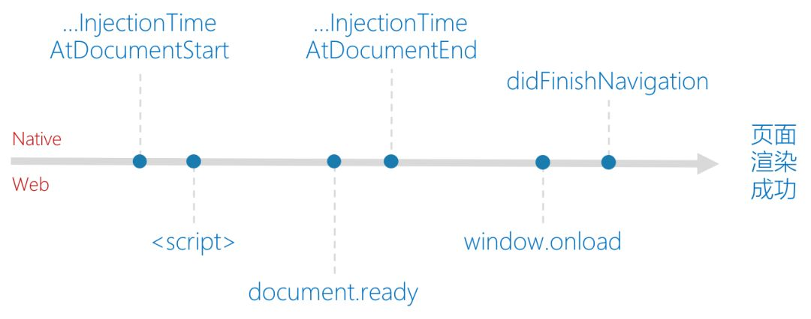
WKWebView 常见问题
使用 WKWebView 带来的另外一个好处，就是我们可以通过源码理解部分加载逻辑，为 Crash 提供一些思路，或者使用一些私有方法处理复杂业务逻辑。
NSURLProtocol
WKWebView 最为显著的改变，就是不支持 NSURLProtocol。为了兼容旧的业务逻辑，一部分 App 通过 WKBrowsingContextController 中的非公开方法实现了 NSURLProtocol。
1 | // WKBrowsingContextController |
在 iOS 11 中，系统增加了 setURLSchemeHandler 函数用来拦截自定义的 Scheme。但是不同于 UIWebView，新的函数只能拦截自定义的 Scheme(SchemeRegistry.cpp)，对使用最多的 HTTP/HTTPS 依然不能有效的拦截。
1 | //SchemeRegistry |
白屏
通常 WKWebView 白屏的原因主要分两种，一种是由于 Web 的进程 Crash（多见于内部进程通信）；一种就是 WebView 渲染时的错误（Debug 一切正常只是没有对应的内容）。对于白屏的检测，前者在 iOS9 之后系统提供了对应 Crash 的回调函数，同时业界也有通过判断 URL/Title 是否为空的方式作为辅助；后者业界通过视图树对比，判断 SubView 是否包含 WKCompsitingView，以及通过随机点截图等方式作为白屏判断的依据。
其他 WKWebView 的系统级问题如 Cookie、POST 参数、异步 Javascript 等等一系列的问题，可以通过业务逻辑的调整重新适配。
由于 WebKit 源码等开放性，我们也可以利用私有方法来简化代码逻辑、实现复杂的产品需求。例如在 WKWebViewPrivate 中可以获得各种页面信息、直接取到 UserAgent、 在 WKBackForwardListPrivate 中可以清理掉全部的跳转历史、以及在 WKContentViewInteraction 中替换方法实现自定义的 MenuItem 等等。
1 | @interface WKWebView (WKPrivate) |
3、App 中的应用场景
WKWebView 系统提供了四个用于加载渲染 Web 的函数。这四个函数从加载的类型上可以分为两类：加载 URL & 加载 HTML\Data。所以基于此也延伸出两种不同的业务场景：加载 URL 的页面直出类和加载数据的模板渲染类，同时两种类型各自也有不同的优化重点及方向。
页面直出类
1 | // 根据 URL 直接展示 Web 页面 |
通常各类 App 中的 Web 页面加载都是通过加载 URL 的方式，比如嵌入的运营活动页面、广告页面等等。
模板渲染类
1 | // 根据模板 & 数据渲染 Web 页面 |
需要使用 WebView 展示，且交互逻辑较多的页面，最常见的就是资讯类 App 的内容展示页。
iOS 中 Web 与 Native 的通信
单纯的使用 Web 容器加载页面已经不能满足复杂的功能，开发者希望数据可以在 Native 和 Web 之间通信传递来实现复杂的功能，而 Javascript 就是通信的媒介。对于有 WebView 的情况，虽然 WKWebView 提供了系统级的方法，但是大部分 App 仍然使用基于 URLScheme 的 WebViewBridge 用以兼容 UIWebView。而脱离了 WebView 容器，系统提供了 JavaScriptCore 的 framework，它也为之后蓬勃发展的跨平台和热修复技术提供了可能。
1. 基于 WebView 的通信
基于 WebView 的通信主要有两个 途径，一个是通过系统或私有方法，获取 WebView 当中的 JSContext，使用系统封装的基于 JSCore 的函数通信。另一类就是通过创建自定义 Scheme 的 iframe Dom，客户端在回调中进行拦截实现。
UIWebView & WKWebView 系统级
在 UIWebView 时代没有提供系统级的函数进行 Web 与 Native 的交互，绝大部分 App 都是通过 WebViewJavascriptBridge（下节介绍）来进行的通信。但是由于 JavascriptCore 的存在，对于 UIWebView 来说只要有效的获取到内部的 JSContext，也可以达到目的。目前已知有效的几个私有方法获取 Context 的方法如下：
1 | // 通过系统废弃函数获取 context |
在 WKWebView 中提供了系统级的 Web 和 Native 通讯机制，通过 Message Handler 的封装使开发效率有了很大的提升。同时系统封装了 JavaScript 对象和 Objective-C 对象的转换逻辑，也进降低了使用的门槛。
1 | // js 端发送消息 |
拦截自定义 Scheme 请求 - WebViewJavascriptBridge
由于私有方法的稳定性与审核风险，开发者不愿意使用上文提到的 UIWebView 获取 JSContext 的方式进行通信，所以通常都采用基于 iframe 和自定义 Scheme 的 JavascriptBridge 进行通信。虽然在之后的 WKWebView 提供了系统函数，但是大部分 App 都需要兼容 UIWebView 与 WKWebView，所以目前的使用范围仍然十分广泛。
在 Github 中类似的开源框架有很多，但是无外乎都是 Web 侧根据固定的格式创建包含通信信息的 Request，之后创建隐式 iFrame 节点请求；Native 侧在相应的 WebView 回调中解析 Request 的 Scheme，之后按照格式解析数据并处理。
而对于数据传递和回调处理的问题，在兼容两种 WebView、持续的更新的 WebViewJavascriptBridge 中，iFrame request 没有直接传递数据，而是 Web 和 Native 侧维护共同的参数或回调 Queue，Native 通过 Request 中 Scheme 的解析触发对 Queue 里数据的读取。
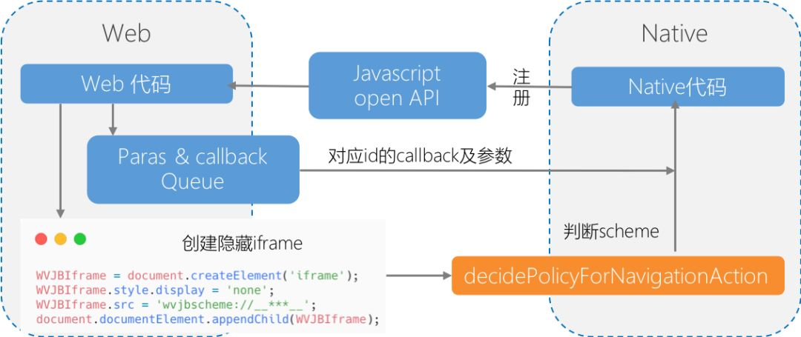
脱离 WebView 的通信 JavaScriptCore
JavascriptCore
JavascriptCore 一直作为 WebKit 中内置的 JS 引擎使用，在 iOS7 之后，Apple 对原有的 C/C++ 代码进行了 OC 的封装，成系统级的 framework 供开发者使用。作为一个引擎来讲，JavascriptCore 的词法、语法分析，以及多层次的 JIT 编译技术都是值得深入挖掘和学习的方向，由于篇幅的限制暂且不做深入的讨论。
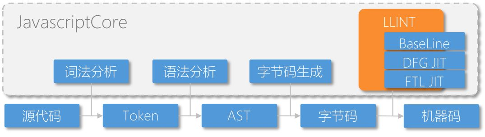
JavascriptCore.framework
虽然 JavascriptCore.framework 只暴露了较少的头文件和系统函数，但却提供了在 App 中脱离 WebView 执行 Javascript 的环境和能力。
JSVirtualMachine：提供了 JS 执行的底层资源及内存。虽然 Java 与 Javascript 没有一点关系，但是同样作为虚拟机，JSVM 和 JVM 做了一部分类似的事情。每个 JSVirtualMachine 独占线程，拥有独立的空间和管理，但是可以包含多个 JSContext。JSContext：提供了 JS 运行的上下文环境和接口。可以不准确的理解为，就是创建了一个 Javascript 中的 Window 对象。JSValue：提供了 OC 和 JS 间数据类型的封装和转换 Type Conversions。除了基本的数据类型，需要注意 OC 中的 Block 转换为 JS 中的 function，Class 转换为 Constructor 等等。
JSManagedValue：Javascript 使用 GC 机制管理内存，而 OC 采用引用计数的方式管理内存。所以在 JavascriptCore 使用过程中，难免会遇到循环引用以及提前释放的问题。JSManagedValue 解决了在两种环境中的内存管理问题。JSExport：提供了类、属性和实例方法的调用接口。内部实现是在 ProtoType & Constructor 中实现对应的属性和方法。
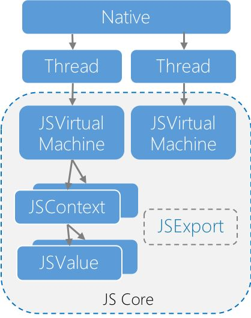
使用 JavascriptCore 进行通信
Native - Web: 通过 JavascriptCore，Native 可以直接在 Context 中执行 JS 语句，和 Web 侧进行通信和交互。
1 | JSValue *value = [self.jsContext evaluateScript:@"document.cookie"]; |
Web - Native: 对于 Web 侧向 Native 的通信，JavascriptCore 提供 两种 方式，注册 Block & Export 协议。
1 | //Native |
对于 JavascriptCore 粗浅的理解，可以认为使用 Block 方法，内部是将 Block 保存到保存到一个 Web 环境中的全局的 Object 中，例如 window。而使用 JSExport 方法，则是在 Web 环境中 Object 的 prototype 中创建属性、实例方法；在 constructor 对象中创建类方法，从而实现 Web 中的调用。
App 中的应用场景
对于基于 WebView 的通信，主要用于 App 向 H5 页面中注入的 Javascript Open Api，如提供 Native 的拍照、音视频、定位；以及 App 内的登录、分享等等功能。
对于 JavaScriptCore，则催生了动态化、跨平台以及热修复等一系列技术的蓬勃发展。
跨平台与热修复
近几年来国内外移动端各种方案如雨后春笋般涌现，“Write once, run anywhere”不再是开发者的向往。剥离跨平台技术在 Web 侧 DSL、virtualDom 等方面的优化，以及 Native 侧 Runtime 的应用与封装，对于两端通信的核心，依然是 JavascriptCore。
而不同于国外开发者对跨平台技术的积极探索，国内开发者也对热修复技术产生了极大的热情。同样作为 Native 和 Web 的交叉 - JavascriptCore，依然承担着整个技术结构中的通信任务。
1. 基于 Web 的热修复技术
对于国内的 iOS 开发者来说，审核周期、敏感业务、支付分成以及 bug 修复都催生了热修复方向的不断探索。在苹果加强审核之前，几乎所有大型的 App 都把热修复当成了 iOS 开发的基础能力，最近在《移动开发还有救么》中也详细的介绍了相关黑科技的前世今生。在所有 iOS 热修复的方案中，基于 Javascript、同时也是影响最大的就是 JSPatch。
基于上文的分析，对于脱离 WebView 的 Native 和 Web 间的通信，我们只能使用 JavascriptCore。而在 JavascriptCore 中提供了两种方式用于通信，即 Context 注册 Block 的回调，以及 JSExport。对于热修复的场景来说，我们不可能把潜在需要修复的函数都一一使用协议进行注册，更不能对新增方法和删除方法等进行处理，所以在 Native 和 Web 通信这个维度，我们只能采用 Context 注册 Block 的方式。
确定了通信采用 Block 回调的方式后，热修复就面临着如何在 JS 中调用类以及类的方法问题。由于没有使用 JSExport 等方式，JS 是无法找到相应类等属性和方法，在 JSPathc 中，通过简单的字符串替换，将所有方法都替换成通用函数（__c），然后就可以将相关信息传递给 Native，进而使用 runtime 接口调用方法。
1 | // 替换全部方法调用 |
当然对于 JSPatch 以及其他热修复的项目来说，Web 和 Native 通信只是整个框架中的一个技术点，更多的实现原理和细节由于篇幅的关系暂且不做介绍。
2. 基于 Web 的跨平台技术
随着 Google 开源了基于 Dart 语言的 Flutter，跨平台的技术又进入了一个新的发展阶段。对于传统的跨平台技术来讲，各个公司以 JavascriptCore 作为通信桥梁，围绕着 DSL 的解析、方法表的注册、模块注册通信、参数传递的设计以及 OC Runtime 的运用等不同方向，封装成了一个又一个跨平台的项目。
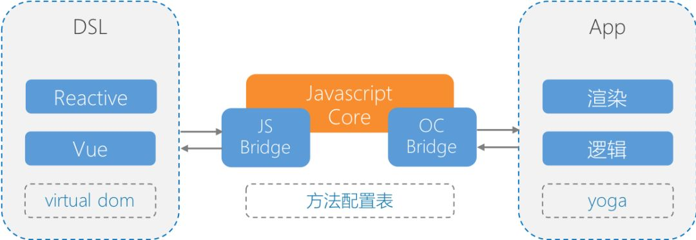
而在其中，以 Javascript 作为前端 DSL 的跨平台技术方案里，FaceBook 的 react-native 以及阿里 (目前托管给了 Apache) 的 Weex 最为流行。在网络上两者的比较文章有很多，集中在学习成本、框架生态、代码侵入、性能以及包大小等, 各个业务可以根据自己的重点选择合理的技术结构。
而不管是 react-native 还是 Weex,Web 和 Native 的通信桥梁仍然是 JavascriptCore。
1 | //weex 举例 |
iOS 中 Web 相关优化策略
随着 Web 技术的不断升级以及 App 动态性业务需求的增多，越来越多的 Web 页面加入到了 iOS App 当中。与之对应的，首屏展示速度——这个对于移动客户端 Web 的最重要体验优化，也成为了移动客户端中 Web 业务最重要的优化方向。
这一章节更为详细的设计与实现，请移步 iOS 新闻类 App 内容页技术探索 (https://dequan1331.github.io/hybrid-page-kit.html)。
1. 不同业务场景的优化策略
对于单纯的 Web 页面来说，业界早已有了合理的优化方向以及成熟的优化方案，而对于移动客户端中的 Web 来说，开发者在进行单一的 Web 优化同时，还可以通过优化 Web 容器以及 Web 页面中数据加载方式等多个途径做出优化。
所以对于 iOS 开发中的优化来说，就是通过 Native 和 Web 两个维度的优化关键渲染路径，保证 WebView 优先渲染完毕。由此我们梳理了常规 Web 页面整体的加载顺序，从中找出关键渲染路径，继而逐个分析、优化。
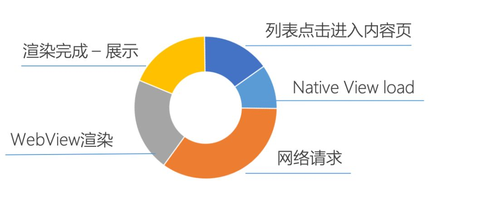
2. Web 维度的优化
通用 Web 优化
对于 Web 的通用优化方案，一般来说在网络层面，可以通过 DNS 和 CDN 技术减少网络延迟、通过各种 HTTP 缓存技术减少网络请求次数、通过资源压缩和合并减少请求内容等。在渲染层面可以通过精简和优化业务代码、按需加载、防止阻塞、调整加载顺序优化等等。对于这个老生常谈的问题，业内已经有十分成熟和完整的总结，例如《Best Practices for Speeding Up Your Web Site》，已经有了很好的整理和总结。
其他
脱离较为通用的优化，在对代码侵入宽容度较高的场景中，开发者对 Web 优化有着更为激进的做法。例如在 VasSonic 中，除了 Web 容器复用、数据模板分离、预拉取和通用的优化方式外，还通过自定义 VasSonic 标签将 HTML 页面进行划分，分段进行缓存控制，以达到更高的优化效果。
3. Native 维度的优化
容器复用和预热
WKWebView 虽然 JIT 大幅优化了 JS 的执行速度，但是单纯的加载渲染 HTML，WKWebView 比 UIWebView 慢了很多。根据渲染的不同阶段分别对耗时进行测试，同时对比 UIWebView，我们发现 WKWebView 在初始化及渲染开始前的耗时较多。
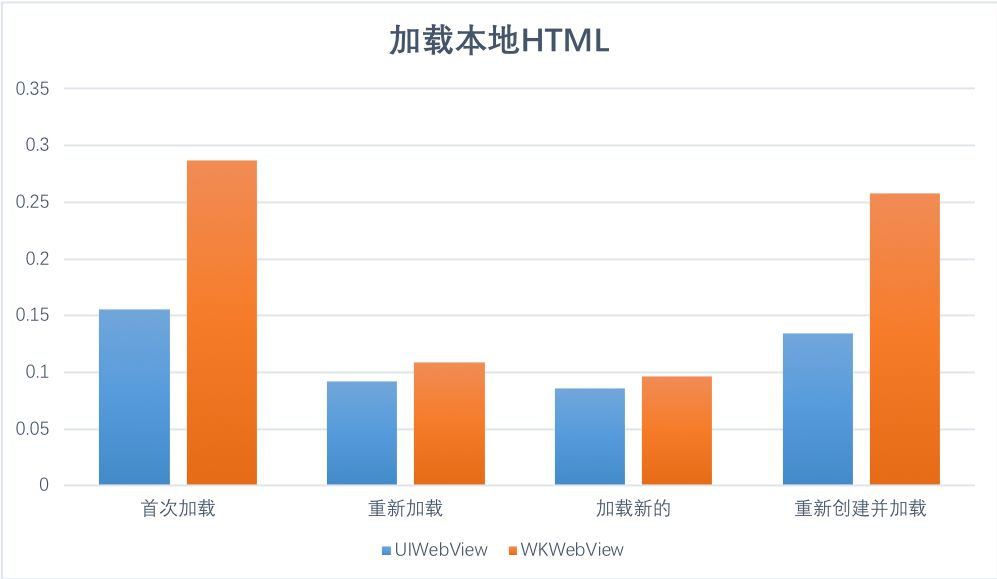
针对这种情况，业界主流的做法就是复用 & 预热。预热即时在 App 启动时创建一个 WKWebView，使其内部部分逻辑预热已提升加载速度。而复用又分为两种，较为复杂的是处理边界条件已达到真正的复用，还有一种较为 Triky 的办法就是常驻一个空 WKWebView 在内存。
HybridPageKit 提供了易于集成的完整 WKWebView 重用机制实现, 开发者可以无需关注复用细节，无缝的体验更为高效的 WKWebView。
Native 并行资源请求 & 离线包
由于 Web 页面内请求流程不可控以及网络环境的影响，对于 Web 的加载来说，网络请求一直是优化的重点。开发者较为常用的做法是使用 Native 并行代理数据请求，替代 Web 内核的资源加载。在客户端初始化页面的同时，并行开始网络请求数据；当 Web 页面渲染时向 Native 获取其代理请求的数据。
而将并行加载和预加载做到极致的优化，就是离线包的使用。将常用的需要下载资源（HTML 模板、JS 文件、CSS 文件、占位图片）打包，App 选择合适的时机全部下载到本地，当 Web 页面渲染时向 Native 获取其数据。
通过离线包的使用，Web 页面可以并行（提前）加载页面资源，同时摆脱了网络的影响，提高了页面的加载速度和成功率。当然离线包作为资源动态更新的一个方式，合理的下载时机、增量更新、加密和校验等方面都是需要进行设计和思考的方向，后文会简单介绍。
复杂 Dom 节点 Native 化实现
当并行请求资源，客户端代理数据请求的技术方案逐渐成熟时，由于 WKWebView 的限制，开发者不得不面对业务调整和适配。其中保留原有代理逻辑、采用 LocalServer 的方式最为普遍。但是由于 WKWebView 的进程间通信、LocalServer Socket 建立与连接、资源的重复编解码都影响了代理请求的效率。
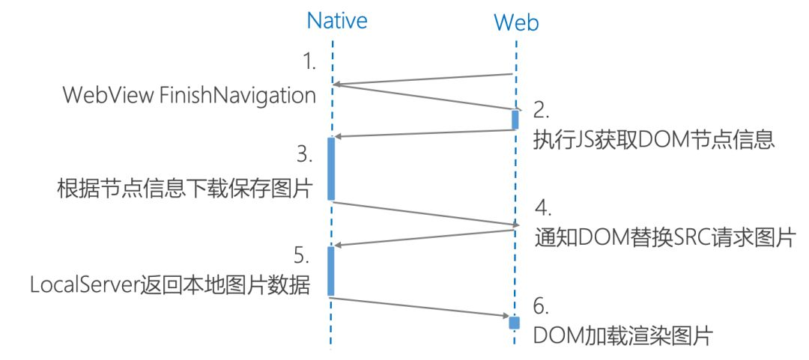
所以对于一些资讯类 App，通常采用 Dom 节点占位、Native 渲染实现的方式进行优化，如图片、地图、音视频等模块。这样不但能减少通信和请求的建立、提供更加友好的交互、也能并行的进行 View 的渲染和处理，同时减少 Web 页面的业务逻辑。
HybridPageKit 中就提供封装好的功能框架，开发者可以简单的替换 Dom 节点为 NativeView。
按优先级划分业务逻辑
从 App 的维度上看，一个 Web 页面从入口点击到渲染完成，或多或少都会有 Native 的业务逻辑并行执行。所以这个角度的优化关键渲染路径，就是优先保证 WebView 以及其他在首屏直接展示的 Native 模块优先渲染。所以承载 Web 页面的 Native 容器，可以根据业务逻辑的优先级，在保证 WebView 模块展示之后，选择合适的时机进行数据加载、视图渲染等。这样就能保证在 Native 的维度上，关键路径优先渲染。
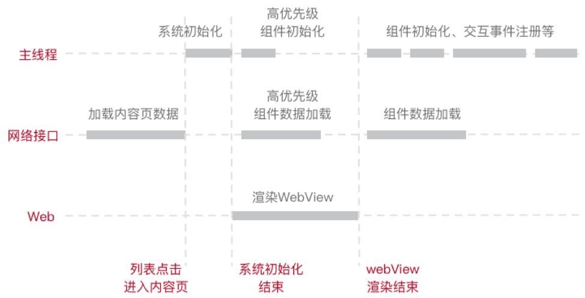
4. 优化整体流程
所以整体上对于客户端来说，我们可以从 Native 维度（容器和数据加载）以及 Web 维度两个方向提升加载速度，按照页面的加载流程，整体的优化方向如下：
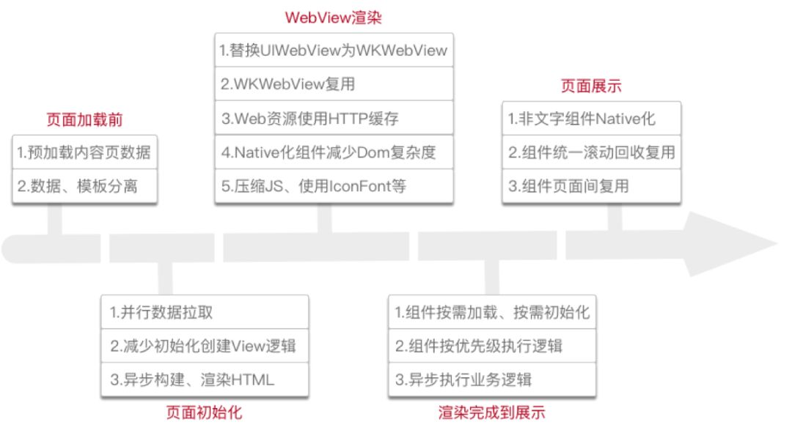
iOS 中 Web 相关延伸业务
1. 模板引擎
为了达到并行加载数据以及并行处理复杂的展示逻辑，对于非直出类型的 Web 页面，绝大部分 App 都采用数据和模板分离下发的方式。而这样的技术架构，导致在客户端内需要增加替换对应 DSL 的模板标签，形成最终的 HTML 的业务逻辑。简单的字符串替换逻辑不但低效，还无法做到合理的组件化管理，以及组件合理的与 Native 交互，而模板引擎相关技术会使这种逻辑和表现分离的业务场景实现的更加简洁和优雅。
基于模板引擎与数据分离，客户端可以根据数据并行创建子业务模块，同时在子业务模块中处理和 Native 交互的部分如图片裁剪适配、点击跳转等等，生成 HTML 代码片段。之后基于模板进行替换生成完整的页面。这样不但减少了大量的字符串替换逻辑，同时业务也得到了合理拆分。
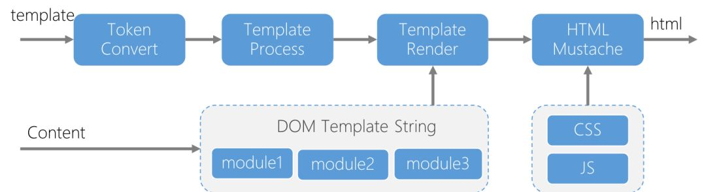
模板引擎的本质就是字符串的解析和替换拼接。在 Web 端不同的使用场景有很多不同语法的引擎类型，而在客户端较为流行的，有使用较为复杂的 MGTemplateEngine，它类似于 Smarty，支持部分模板逻辑。也有基于 mustache，Logic-less 的 GRMustache 可供选择。
2. 资源动态更新和管理
无论是离线包、本地注入的 JS、CSS 文件、以及本地化 Web 中的默认图片，目的都是通过提前下载，替换网络请求为本地读取来优化 Web 的加载体验和成功率。而对于这些资源的管理，开发者需要从下载与更新，以及 Web 中的访问这两个方面进行设计优化。
下载与更新
下载与重试：对于资源或是离线包的下载，选择合适的时机、失败重载时机、失败重载次数都要根据业务灵活调整。通常为了增加成功率和及时更新，在冷启动、前后台切换、关键的操作节点，或者采用定时轮循的方式，都需要进行资源版本号或 MD5 的判断，用以触发下载逻辑。当然对于服务端来说，合理的灰度控制，也是保证业务稳定的重要途径。
签名校验：对于动态下载的资源，我们都需要将原文件的签名进行校验，防止在传输过程中被篡改。对于单项加密的办法就是双端对数据进行 MD5 的加密，之后客户端校验 MD5 是否符合预期；而双向加密可以采用 DES 等加密算法，客户端使用公钥对资源验证使用。
增量更新：为了减少资源和离线包的重复下载，业内大部分使用离线包的场景都采用了增量更新的方式。即客户端在触发请求资源时，带上本地已存在资源的标示，服务端根据标示和最新资源做对比，之后只提供新增或修改的 Patch 供客户端下载。
基于 LocalServer 的访问
在完成资源的下载与更新后，如何将 Web 请求重定向到本地，大部分 App 都依赖于 NSURLProtocol。上文提到在 WKWebView 中虽然可以使用私有函数实现（或者 iOS11+ 提供系统函数），但是仍然有许多问题。
目前业界一部分 App，都采用了集成 LocalServer 的方式，接管部分 Web 请求，从而达到访问本地资源的目的。同时集成了 LocalServer，通过将本地资源封装成 Response，利用 HTTP 的缓存技术，进一步的优化了读取的时间和性能，实现层次化的缓存结构。而使用了本地资源的 HTTP 缓存，就需要考虑缓存的控制和过期时间。通常可以通过在 URL 上增加本地文件的修改时间、或本地文件的 MD5 来确保缓存的有效性。
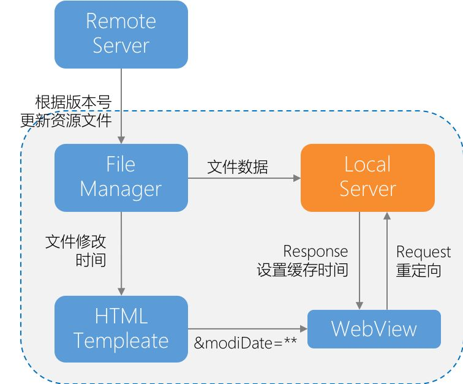
GCDWebServer 浅析
排除 Socket 类型，业界流行的 Objc 版针对 HTTP 开源的 WebServer，不外乎年久失修的 CocoaHTTPServer 以及 GCDWebServer。GCDWebServer 是一个基于 GCD 的轻量级服务器，简单的四个模块 - Server / Connection / Request / Reponse，以及通过维护 LIFO 的 Handler 队列传入业务逻辑生成响应。在排除了基于 RFC 的 Request/Response 协议设计之外，关键的代码和流程如下：
1 | //GCDWebServer 端口绑定 |
在 LocalServer 的使用上，也要注意端口的选择 ports used by Apple，以及前后台切换时 suspendInBackground 的设置和业务处理。
3.Javascript Open Api
随着 App 业务的不断发展，单纯的 Web 加载与渲染无法满足复杂的交互逻辑，如拍照、音视频、蓝牙、定位等，同时 App 内也需要统一的登录态，统一的分享逻辑以及支付逻辑等。所以针对第三方的 Web 页面，Native 需要注册相应的 Javascript 接口供 Web 使用。
对于 Api 需要提供的能力、接口设计和文档规范，不同的业务逻辑和团队代码风格会有不同的定义，微信 JS-SDK 说明文档 就是一个很好的例子。而脱离 Javascript Open Api 对外的接口设计和封装，在内部的实现上也有一些通用的关键因素，这里简单列举几个：
注入方式和时机
对于 Javascript 文件的注入，最简单的就是将 JS 文件打包到项目中，使用 WKWebView 提供的系统函数进行注入。这种方式无需网络加载，可以合理的选择注入时机，但是无法动态的进行修改和调整。而对于这部分业务需求需要经常调整的 App 来说，也可以把文件存储到 CDN，通过模板替换或者和 Web 合作者约定，在 Web 的 HTML 中通过 URL 的方式进行加载，这种的方式虽然动态化程度较高，但是需要合作方的配合，同时对于 JS Api 也不能做到拆分的注入。
针对上面的两种方式的优点不足，一个较为合理的方式是 Javascript 文件采用本地注入的方式，同时建立资源的动态更新系统（上文）。这样一方面支持了动态更新，同时也无需合作方的配合，对于不同的业务场景也可以拆分不同的 Api 进行注入，保证安全。
安全控制
对于 Javascript Open Api 设计实现的另一个重要方面，就是安全性的控制。由于完整的 Api 需要支持 Native 登录、Cookies 等较为敏感的信息获取，同时也支持一些对 UI 和体验影响较多的功能如页面跳转、分享等，所以 App 需要一套权限分级的逻辑控制 Web 相关的接口调用，保证体验和安全。
常规的做法就是对 Javascript Open Api 建立分级的管理，不同权限的 Web 页面只能调用各自权限内的接口。客户端通过 Domain 进行分级，同时支持动态拉取权限 Domain 白名单，灵活的配置 Web 页面的权限。在此基础上 App 内部也可以通过业务逻辑的划分，在 Native 层面使用不同的容器加载页面，而容器根据业务逻辑的不同，注入不同的 JS 文件进行 Api 权限控制。
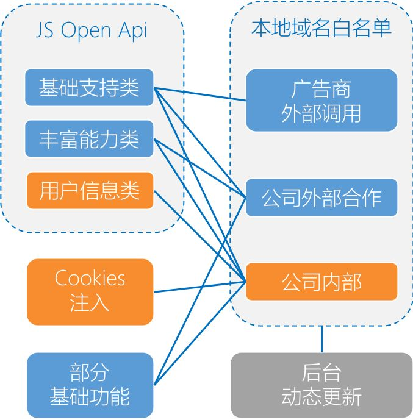